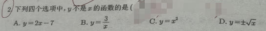

📷 点击查看原图
下列四个选项中， 不是 的函数的是（ ）
A. B.
C. D.
| 知识点 | 说明 |
|---|---|
| 函数定义 | 每个 必须对应唯一的 |
| 号的含义 | 是两个函数， 不是函数 |
| 判别方法 | 垂直于 轴的直线与图象最多交一个点 |
判断一个关系是否是函数，关键看：每个 是否对应唯一的 。
| 选项 | 表达式 | 对应关系 | 是否函数 |
|---|---|---|---|
| A | 每个 对应唯一 | ✓ 是 | |
| B | 每个 对应唯一 | ✓ 是 | |
| C | 每个 对应唯一 | ✓ 是 | |
| D | 一个 对应两个 （如 ） | ✗ 不是 |
📌 来源：江西中考「函数概念」真题（2022江西 溶解度函数判断、2019江西 铅笔函数探究，见 21cnjy zy.21cnjy.com/19431815、教习网 m.51jiaoxi.com/doc-14244471.html）
题1：下列各式中， 是 的函数的是（ ）
A. B.
C. D.
💡 答：B。A、C、D 中一个 （如 ）都对应两个 （），不满足"唯一对应"；只有 B 每个 对应唯一 。📄 查看详细解答 →
题2：下列图象（描述）中， 不是 的函数的是（ ）
A. 直线 B. 圆
C. 抛物线 D. 双曲线
💡 答：B。圆的图象上，一个 （如 ）对应两个 （），垂线检验不通过。📄 查看详细解答 →
题3：某关系给出对应： 取 时， 依次为 。判断 是否是 的函数，并说明理由。
💡 答：是函数。"唯一"指每个 对应一个 ；不同 可以对应相同 （ 重复出现没问题）。📄 查看详细解答 →
📌 来源：与 p15"函数概念"同主题的进阶判断练习